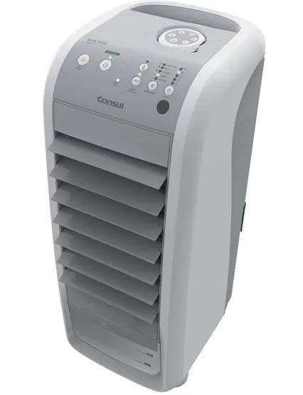

A escolha desse tema para o Trabalho de Conclusão de Curso (TCC) se baseia na importância da umidade relativa do ar para o conforto e bem-estar das pessoas. A umidade relativa do ar, quando em níveis inadequados para as pessoas, pode causar diversos problemas à saúde das pessoas, como já foi supracitado anteriormente. Esse protótipo foi desenvolvido como parte de um projeto de conclusão de curso do Curso Técnico em Refrigeração Industrial, com o intuito de demonstrar uma aplicação prática e econômica de uma transformação de um climatizador comum em um climatizador refrigerado, a partir de componentes de fácil acesso e baixo custo, amplamente encontrando no mercado. O processo de refrigeração, especialmente quando aplicado em climatizadores refrigerados, traz diversos benefícios à saúde. A manutenção do conforto térmico, controle da umidade relativa do ar e purificação do ambiente interno, contribuem diretamente para a prevenção de problemas respiratórios, melhora a qualidade do ar e bem-estar geral. Portanto, investir em equipamentos de refrigeração e manter um ambiente climatizado e saudável é essencial para a saúde e o bem-estar das pessoas. De acordo com a Organização Mundial da Saúde (OMS), a umidade ideal para a saúde dos seres humanos deve estar entre 50 e 60%. Por isso, quando o índice fica entre 21% e 30%, é decretado o estado de atenção,quando a umidade está entre 12 e 20%, é considerado estado de alerta; e o estado de emergência é caracterizado por índices de umidade relativa do ar inferior aos 12%
